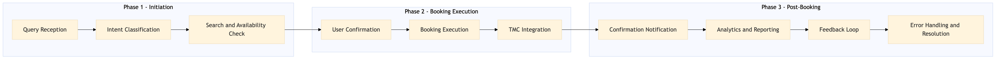

Process document for OB-CH-07 - Voice and AI Agent Booking Channel, focusing on integrating voice and AI capabilities into OTA and TMC systems for seamless booking experiences.
| Trigger | User initiates a voice or text-based query through supported channels (e.g., Alexa, Google Assistant, mobile app chatbot). |
| Outcome | Successful booking of travel services with real-time confirmation and integration across all relevant systems. |
| Systems | AWS SageMaker Snowflake Kafka Expedia Open World Partner Central Amadeus NDC Sabre GDS Travelport EVC One Key TravelAds Concur T2 Concur Expense Amex GBT Neo/Complete International SOS Cvent Amex Corporate Card VCN Analytics Cloud Workday Tableau Salesforce |

Click to enlarge
| Step | Name & Pain Point | Role | System | Input | Output | KPI | Flags |
|---|---|---|---|---|---|---|---|
| 1.1 | Query Reception Handling ambiguous user queries | AI Agent | AWS SageMaker, Snowflake | User query (voice or text) | Parsed intent and entities | 95% accuracy in intent recognition | ⚠ Exception |
| 1.2 | Intent Classification Dealing with complex intents | AI Agent | AWS SageMaker, Kafka | Parsed intent and entities | Classified intent (e.g., booking, search, cancellation) | 90% accuracy in classification | ⚠ Exception |
| 1.3 | Search and Availability Check Real-time data synchronization issues | OTA System | Expedia Open World, Partner Central, Amadeus NDC, Sabre GDS, Travelport, EVC, One Key, TravelAds | Classified intent and entities | Available options with pricing | 98% availability check accuracy | ⚠ Exception |
| 1.4 | User Confirmation Handling user cancellations or changes | AI Agent | AWS SageMaker, Snowflake | Available options with pricing | Confirmed booking details | 85% user confirmation rate | ◆ Decision |
| 1.5 | Booking Execution Integration with multiple OTA systems | OTA System | Expedia Open World, Partner Central, Amadeus NDC, Sabre GDS, Travelport, EVC, One Key, TravelAds | Confirmed booking details | Booking confirmation | 95% successful booking rate | ⚠ Exception |
| 1.6 | TMC Integration Data consistency and synchronization | TMC System | Concur T2, Concur Expense, Amex GBT Neo/Complete, Amadeus GDS, S/4HANA, International SOS, Cvent, Amex Corporate Card, VCN, Analytics Cloud, Workday | Booking confirmation | Integrated booking details in TMC systems | 90% successful integration rate | ⚠ Exception |
| 1.7 | Confirmation Notification Handling user preferences for notifications | AI Agent | AWS SageMaker, Snowflake | Integrated booking details in TMC systems | User notification (e.g., SMS, email) | 98% user notification rate | ⚠ Exception |
| 1.8 | Analytics and Reporting Scalability of analytics infrastructure | Data Analyst | Tableau, Snowflake | Booking confirmation and integration data | Analytics reports | 95% timely report generation | ⚠ Exception |
| 1.9 | Feedback Loop Continuous improvement of AI models | AI Agent | AWS SageMaker, Snowflake | User feedback (e.g., satisfaction survey) | Updated AI model parameters | 80% positive user feedback rate | ◆ Decision |
| 1.10 | Error Handling and Resolution Handling unexpected errors | Support Team | Salesforce, Snowflake | Error logs and user complaints | Resolved issues | 95% issue resolution rate within 24 hours | ◆ Decision |